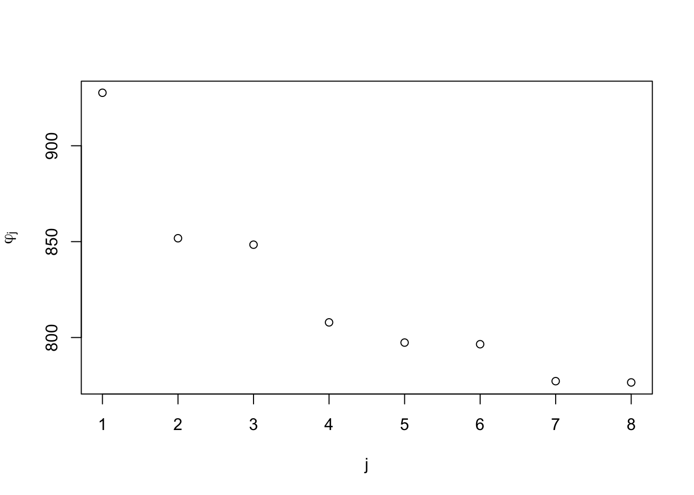
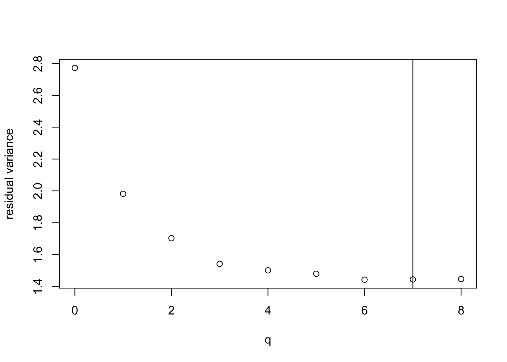

Section 12 Automatic Model Selection
For a model with \(p\) input variables, there are \(2^p\) different choices for which variables to include in the model (or \(2^{p+1}\), if we also have to decide whether to include the intercept). This value increases quickly with \(p\): for \(p = 10\) we have \(1024\) models to consider, for \(p = 20\) there are \(1048576\) possible models, and for large \(p\) it becomes infeasible to simply try all possible models to find the best one. In this section we consider algorithms for automatically finding a good selection inputs when \(p\) is large.
12.1 Exhaustive Search
Efficient algorithms are available to find the best model out of the \(2^p\) possible models for small to moderate \(p\). Here we present a method which can often find the model with the largest \(R^2_\mathrm{adj}\) without having to fit all \(2^p\) models. We consider the least squares estimate throughout.
We can characterise each possible model by the set \(J \subseteq \{1, \ldots p\}\) of variables included in the model. The model includes variable \(x_j\), if and only if \(j \in J\). Here we assume that the intercept is always included, so that \(J=\emptyset\) corresponds to the model \(Y = \beta_0 + \varepsilon\).
The method described in this section is based on the following three observations:
In order to maximise \(R^2_\mathrm{adj}\), we can equivalently also find the \(J\) which minimises \[\begin{equation*} \hat\sigma^2(J) := \frac{1}{n - |J| - 1} \sum_{i=1}^n (y_i - \hat y_i)^2, \end{equation*}\] where \(|J|\) is the number of variables in \(J\) and the \(\hat y_i\) are the fitted values for the model with inputs \(j \in J\). We have seen that these criteria are equivalent in section 11.2.
For \(J \subseteq \{1, \ldots p\}\), define \[\begin{equation*} r(J) := \sum_{i=1}^n (y_i - \hat y_i)^2 \end{equation*}\] where \(\hat y_i\) are the fitted values for the model corresponding to \(J\). This gives the residual sum of squares for each model. The we have \[\begin{align*} \min_J \hat\sigma^2(J) &= \min_J \frac{1}{n - |J| - 1} \sum_{i=1}^n (y_i - \hat y_i)^2 \\ &= \min_{q \in \{0, 1, \ldots, p\}} \min_{J, |J|=q} \frac{1}{n - q - 1} r(J) \\ &= \min_{q \in \{0, 1, \ldots, p\}} \frac{1}{n - q - 1} \min_{J, |J|=q} r(J). \end{align*}\] This means that we can first minimise the residual sum of squares for each fixed number \(q\) of inputs, and then find the \(q\) which gives the best \(\hat\sigma^2\) in a second step.
Adding a variables never increases the residual sum of squares. Thus we have \(r(J) \leq r(K)\) whenever \(J \supseteq K\). We can use this result to exclude certain models without having to fit them.
12.2 Search Algorithm
To find the model with optimal adjusted R-squared value, we perform the following steps. The algorithm is based on the ideas explained in the previous section.
Let \(\varphi_j\) denote the residual sum of squares for the model containing all variables except \(x_j\): \[\begin{equation*} \varphi_j := r\bigl( \{ 1, \ldots, p \} \setminus \{ j \} \bigr). \end{equation*}\] Suppose that the \(x_j\) are ordered so that \[\begin{equation*} \varphi_1 \geq \varphi_2 \geq \cdots \geq \varphi_p. \end{equation*}\] Any model \(J\) with \(j \notin J\) has \(r(J) \geq \varphi_j\).
Compute \(\min_{J, |J|=0} r(J) = r(\emptyset)\). This is the residual sum of squares of the model which consists only of the intercept.
For each \(q := 1, \ldots, p-2\):
Let \[\begin{equation*} r := r\bigl( \{1, \ldots, q\} \bigr). \end{equation*}\] This is the only model with \(q\) inputs where the first excluded variable has index \(k = q+1\). If \(r \leq \varphi_{k-1} = \varphi_q\), we know from step A that \(J = \{1, \ldots, q\}\) is the best model with \(q\) inputs, since any other model will exclude one of the \(x_j\) with \(j \leq q\). In this case we have found \[\begin{equation*} \min_{J, |J|=q} r(J) = r. \end{equation*}\] and we continue step B by trying the next value of \(q\). If \(r > \varphi_{k-1}\), no decision can be taken at this point and we continue with step 2.
For \(j \in \{q+1, \ldots, p\}\) let \[\begin{equation*} r_j := r\bigl( \{1, \ldots, q-1\} \cup \{j\} \bigr). \end{equation*}\] These are all models with \(q\) inputs where the first excluded variable has index \(k = q\). If \(\min(r, r_1, \ldots, r_q) \leq \varphi_{k-1} = \varphi_{q-1}\), then we know from step A that the \(J\) corresponing to the minimum is the best model with \(q\) inputs. In this case we continue step B by trying the next value of \(q\). Otherwise we proceed to step 3.
Similarly to the previous step, we consider all models with \(q\) variables where the first excluded variable has index \(k = q-1\). If the best RSS amonst these and the previously considered models is less than or equal to \(\varphi_{k-1}\) we are done and consider the next \(q\). Otherwise we decrease \(k\) until we reach \(k = 1\). At this point we have considered all models with \(q\) variables and have found \(\min_{J, |J|=q} r(J)\).
Compute \(\min_{J, |J|=p-1} r(J) = \min_{j \in \{1, \ldots, p\}} \varphi_j\).
Compute \(\min_{J, |J|=p} r(J) = r\bigl( \{1, \ldots, p\} \bigr)\).
Find the \(q \in \{0, \ldots, p\}\) for which \(\min_{J, |J|=q} r(J) / (n-q-1)\) is smallest. Output the model which has minimal RSS for this \(q\).
This algorithm finds the model with the maximal \(R^2_\mathrm{adj}\). Often, large savings are achieved by the early exits in step C. Only in the worst case, when all of the comparisons with \(\varphi_j\) in step C fail, this algorithms needs to fit all \(2^p\) models.
Example 12.1 To demonstrate the steps of the algorithm, we implement the method “by hand”. We use the QSAR dataset, which we have already seen in section 7:
# data from https://archive.ics.uci.edu/ml/datasets/QSAR+aquatic+toxicity
qsar <- read.csv("data/qsar_aquatic_toxicity.csv",
sep = ";", header = FALSE)
fields <- c(
"TPSA",
"SAacc",
"H050",
"MLOGP",
"RDCHI",
"GATS1p",
"nN",
"C040",
"LC50"
)
names(qsar) <- fieldsTo make it easy to add/remove columns automatically, we first construct
the design matrix, remove columns as needed, and then use the resulting
matrix in the call to lm() (instead of specifying the terms to include
by name).
X <- model.matrix(LC50 ~ ., data = qsar)
X <- X[, -1] # remove the intercept, since lm() will re-add it later
n <- nrow(X)
p <- ncol(X)
y <- qsar$LC50
m <- lm(y ~ X) # full model
summary(m)
Call:
lm(formula = y ~ X)
Residuals:
Min 1Q Median 3Q Max
-4.4934 -0.7579 -0.1120 0.5829 4.9778
Coefficients:
Estimate Std. Error t value Pr(>|t|)
(Intercept) 2.698887 0.244554 11.036 < 2e-16 ***
XTPSA 0.027201 0.002661 10.220 < 2e-16 ***
XSAacc -0.015081 0.002091 -7.211 1.90e-12 ***
XH050 0.040619 0.059787 0.679 0.497186
XMLOGP 0.446108 0.063296 7.048 5.60e-12 ***
XRDCHI 0.513928 0.135565 3.791 0.000167 ***
XGATS1p -0.571313 0.153882 -3.713 0.000227 ***
XnN -0.224751 0.048301 -4.653 4.12e-06 ***
XC040 0.003194 0.077972 0.041 0.967340
---
Signif. codes: 0 '***' 0.001 '**' 0.01 '*' 0.05 '.' 0.1 ' ' 1
Residual standard error: 1.203 on 537 degrees of freedom
Multiple R-squared: 0.4861, Adjusted R-squared: 0.4785
F-statistic: 63.5 on 8 and 537 DF, p-value: < 2.2e-16Comparing the output to what we have seen in section 7
shows that the new method of calling lm() gives the same results
as before. Now we follow the steps of the algorithm.
A. The values \(\varphi_1, \ldots, \varphi_p\) can be computed as follows:
phi <- numeric(p) # pre-allocate an empty vector
for (j in 1:p) {
idx <- (1:p)[-j] # all variables except x[j]
m <- lm(y ~ X[,idx])
phi[j] <- sum(resid(m)^2)
}
# change the order of columns in X, so that the phi_j are decreasing
jj <- order(phi, decreasing = TRUE)
X <- X[, jj]
phi <- phi[jj]
plot(phi, xlab = "j", ylab = expression(varphi[j]))
The plot shows the residual sum of squares for the model with input \(x_j\) omitted, for \(j\) ranging from 1 to 8.
B. Next, we compute the residual sum of squares of the model which consists only of the intercept. This is the case \(q = 0\).
all.q <- 0:p
best.rss <- numeric(p + 1) # For storing the best RSS for q = 0, ..., p,
best.model <- vector("list", p + 1) # and the corresponding models.
m <- lm(y ~ 1)
best.rss[0 + 1] <- sum(resid(m)^2)
best.model[[0 + 1]] <- integer(0) # a vector of length 0 (no columns)
count <- 1 # number of models fitted so farC. Now we consider \(q \in \{1, \ldots, p-2\}\). The algorithm groups
these cases by the position \(k\) of the first column omitted in the model,
starting with \(k = q+1\) and then decreasing \(k\) in each step.
We use the function combn from the sets package
to get all possible choices of
\(q - k + 1\) columns out of \(\{k+1, \ldots, p\}\).
library(sets) # this defines "combn()"
for (q in 1:(p-2)) {
best.rss[q + 1] <- Inf
# Consider all sets of q columns, ...
for (k in (q+1):1) {
# ... where the first omitted column is k.
# We have to include 1, ..., k-1, and ...
a <- seq_len(k-1)
# ... for the remaining q - (k-1) inputs, we try all
# possible combinations.
bb <- combn((k+1):p, q - k + 1)
for (l in seq_len(ncol(bb))) {
b <- bb[, l]
included <- c(a, b)
m <- lm(y ~ X[, included])
count <- count + 1
rss <- sum(resid(m)^2)
if (rss < best.rss[q + 1]) {
best.rss[q + 1] <- rss
best.model[[q + 1]] <- included
}
}
if (k > 1 && best.rss[q] <= phi[k-1]) {
# If we reach this point, we know that we found the best
# arrangement and we can exit the loop over k early.
# This is what makes the algorithm efficient.
break
}
}
}D. We already fitted all models with \(p-1\) inputs, when we computed phi.
Since we sorted the models, the best of these models is last in the list.
This covers the case \(q = p - 1\).
best.rss[(p - 1) + 1] <- min(phi)
omitted <- jj[length(jj)]
best.model[[(p - 1) + 1]] <- (1:p)[-omitted]
count <- count + length(phi)E. Finally, for \(q = p\) we fit the full model:
F. Now we can find the model with the best \(R^2_\mathrm{adj}\):
plot(all.q, best.rss / (n - all.q - 1),
xlab = "q", ylab = "residual variance")
best.q <- all.q[which.min(best.rss / (n - all.q - 1))]
abline(v = best.q)
We see that the model with \(q = 6\) variables has the the lowest \(\hat\sigma^2\) and thus the highest \(R^2_\mathrm{adj}\). The values for \(q = 7\) and \(q = 8\) are very close to optimal. The best model uses the following variables:
[1] "TPSA" "SAacc" "MLOGP" "nN" "RDCHI" "GATS1p"We can fit the optimal model from the original data:
Call:
lm(formula = LC50 ~ TPSA + SAacc + MLOGP + nN + RDCHI + GATS1p,
data = qsar)
Residuals:
Min 1Q Median 3Q Max
-4.4986 -0.7668 -0.1165 0.5529 4.9758
Coefficients:
Estimate Std. Error t value Pr(>|t|)
(Intercept) 2.758246 0.228483 12.072 < 2e-16 ***
TPSA 0.026858 0.002608 10.300 < 2e-16 ***
SAacc -0.014267 0.001660 -8.596 < 2e-16 ***
MLOGP 0.434578 0.060611 7.170 2.49e-12 ***
nN -0.218445 0.047101 -4.638 4.43e-06 ***
RDCHI 0.514758 0.133430 3.858 0.000128 ***
GATS1p -0.602971 0.146920 -4.104 4.69e-05 ***
---
Signif. codes: 0 '***' 0.001 '**' 0.01 '*' 0.05 '.' 0.1 ' ' 1
Residual standard error: 1.201 on 539 degrees of freedom
Multiple R-squared: 0.4857, Adjusted R-squared: 0.4799
F-statistic: 84.82 on 6 and 539 DF, p-value: < 2.2e-16This shows that \(R^2_\mathrm{adj}\) has indeed marginally improved, from \(0.4785\) to \(0.4799\)
To conclude, we check that the complicated algorithm indeed saved some work:
88 models fitted (34.4%)This shows that we only needed to fit 88 of the 256 models under consideration.
Example 12.2 We can perform the analysis from the previous example automatically,
using the function regsubsets() from the leaps package:
Subset selection object
Call: regsubsets.formula(LC50 ~ ., data = qsar, method = "exhaustive")
8 Variables (and intercept)
Forced in Forced out
TPSA FALSE FALSE
SAacc FALSE FALSE
H050 FALSE FALSE
MLOGP FALSE FALSE
RDCHI FALSE FALSE
GATS1p FALSE FALSE
nN FALSE FALSE
C040 FALSE FALSE
1 subsets of each size up to 8
Selection Algorithm: exhaustive
TPSA SAacc H050 MLOGP RDCHI GATS1p nN C040
1 ( 1 ) " " " " " " "*" " " " " " " " "
2 ( 1 ) "*" " " " " "*" " " " " " " " "
3 ( 1 ) "*" "*" " " "*" " " " " " " " "
4 ( 1 ) "*" "*" " " "*" " " " " "*" " "
5 ( 1 ) "*" "*" " " "*" " " "*" "*" " "
6 ( 1 ) "*" "*" " " "*" "*" "*" "*" " "
7 ( 1 ) "*" "*" "*" "*" "*" "*" "*" " "
8 ( 1 ) "*" "*" "*" "*" "*" "*" "*" "*" This shows the best model of each size. The only step left is to decide which \(q\) to use. This choice depends on the cost-complexity tradeoff. Here we consider \(R^2_\mathrm{adj}\) again:
[1] 0.2855 0.3860 0.4441 0.4588 0.4666 0.4799 0.4795 0.4785This gives the \(R^2_\mathrm{adj}\) for the optimal model of each size
again. At the end of the list we recognise the values 0.4799 and
0.4785 from our previous analysis.
12.3 Other Methods
There are other, approximate methods available which can be used when the number \(p\) of model parameters is too large for an exhaustives search.
12.3.1 Stepwise Forward Selection
Here the idea is to start with a minimal model, and then add variables one by one, until no further (large enough) improvements can be achieved.
Start with only intercept term: \(y=\beta_0 + \varepsilon\), then consider each of \(p\) models: \[\begin{equation*} y = \beta_0 + \beta_j x_j + \varepsilon, \end{equation*}\] for \(j \in \{1, \ldots, p\}\).
Choose the model with the smallest residual sum of squares, provided that the “significance of the fitted model” achieves a specified threshold. The process continues by adding more variables, one at a time, until either
- All variables are in the model.
- The significance level can not be achieved by any variable not in the model.
The “significance of the model” can be examined by considering a \(t\)-test as in lemma 5.4.
12.3.2 Stepwise Backward Selection
Here the idea is to start with the full model, and to remove variables one by one until no good enough candidates for removal are left.
In each step we consider the test statistic \(|T_j|\) for the tests \[\begin{equation*} H_0\colon \beta_j = 0 \quad \textit{vs.} \quad H_1\colon \beta_j \neq 0 \end{equation*}\] for \(j \in \{1, \ldots, p\}\), again as in lemma 5.4. The method selects \(x_j\) corresponding to the smallest \(|T_j|\). If this is below a given threshold, then remove \(x_j\) and re-fit the model. Repeat until either:
- No variables are left in the model.
- The smallest \(|T_j|\) is above the threshold.
12.3.3 Hybrid Methods
Either start with a full model or just intercept. At each stage consider:
- removing least significant variable already in the model,
- adding most significant variable not currently in the model,
with significance levels set to avoid a cyclical behaviour.
Summary
- We discussed different algorithms to perform model selection in practice.